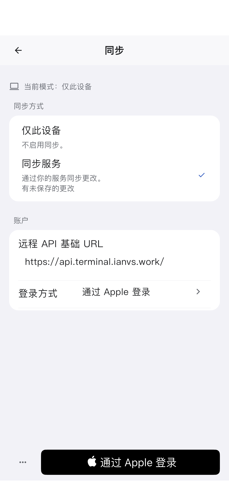
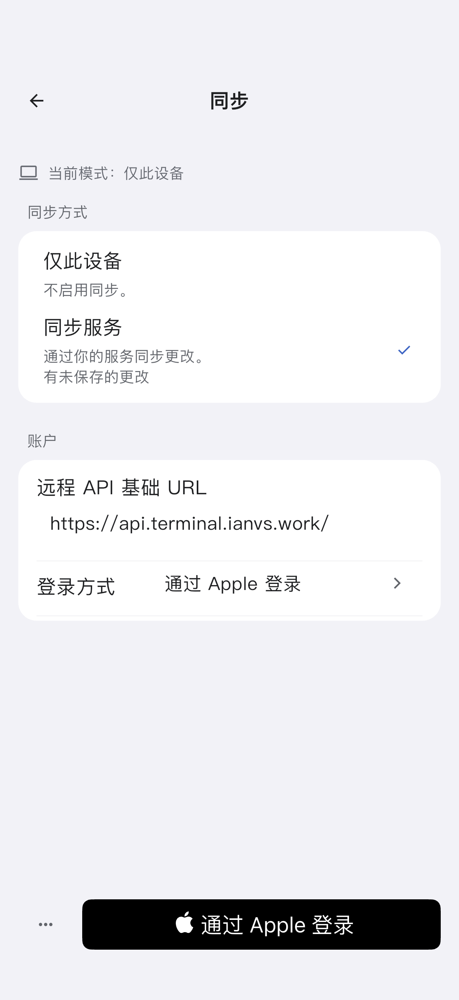
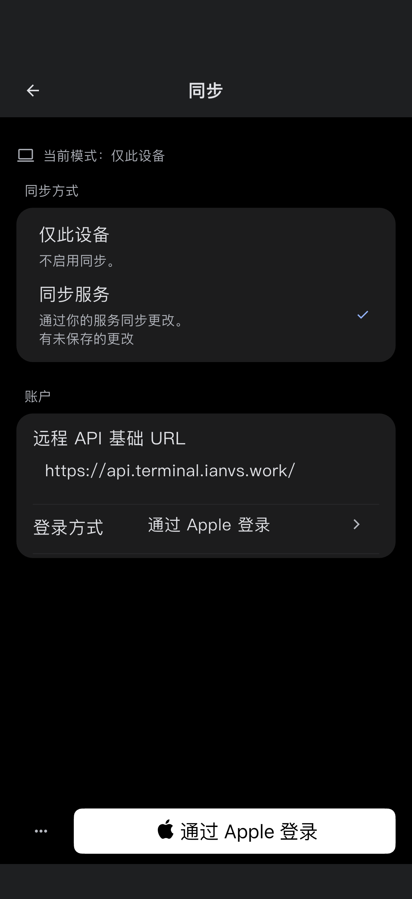
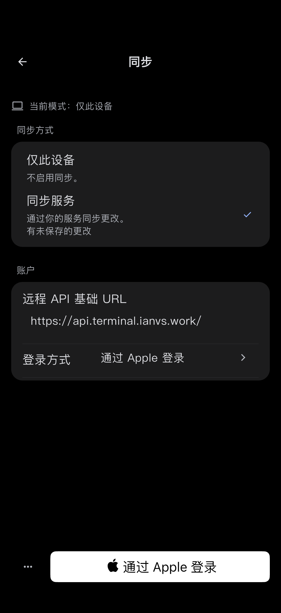
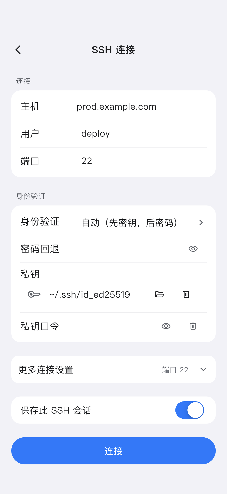
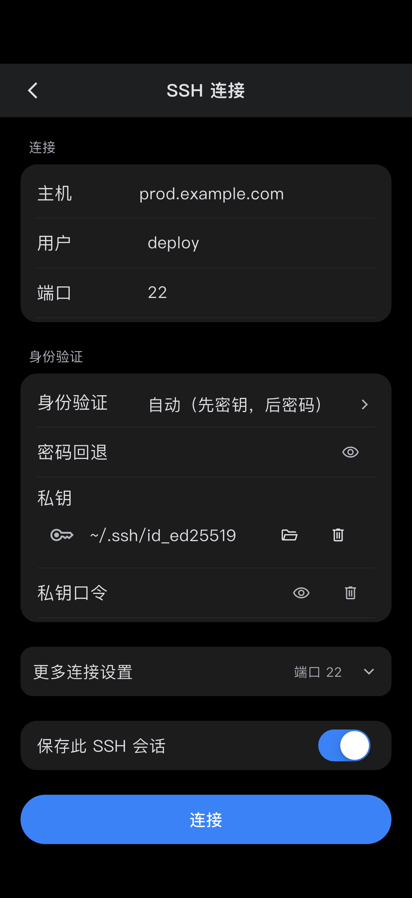
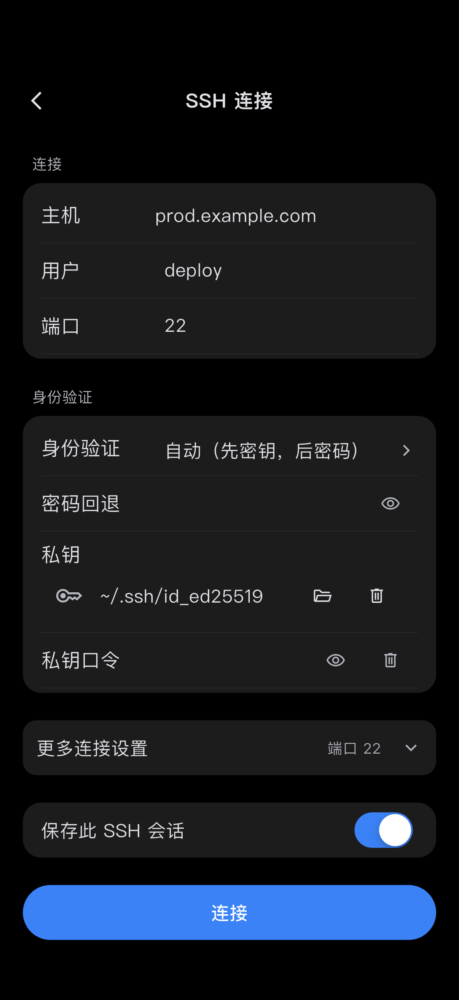
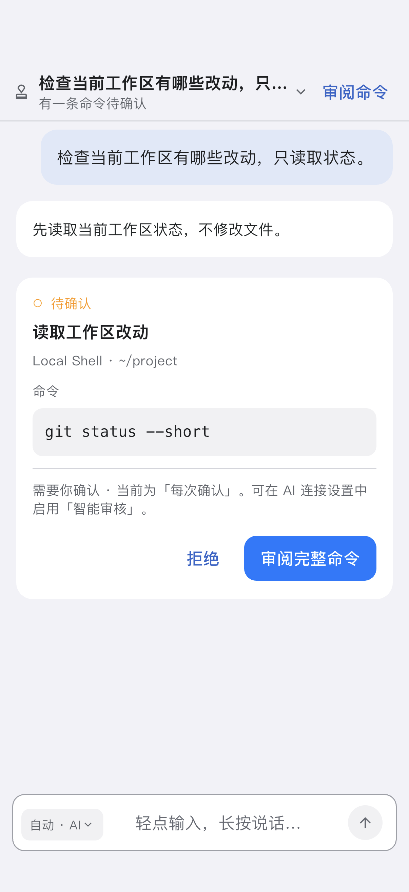
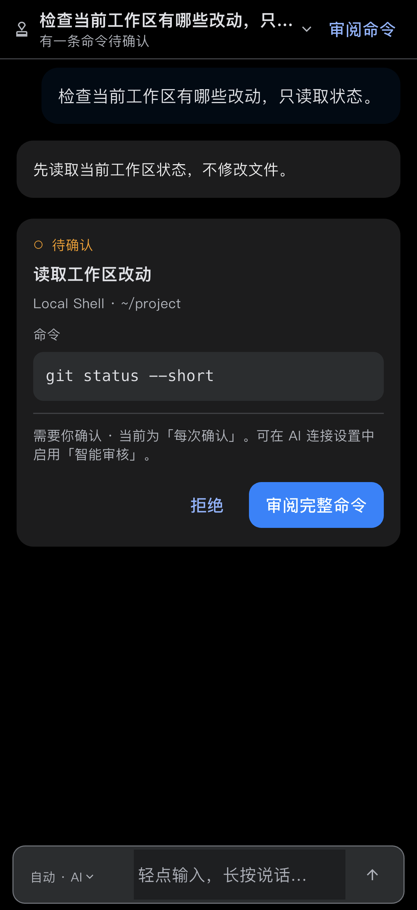
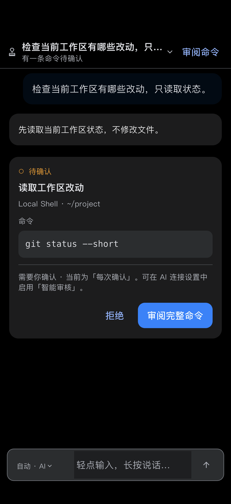

修复前修复后同步 · 浅色修复安全区沿用白色面板底色的问题；顶部、页面和底部手势区统一为分组底色。圆角与灵动岛为设备遮罩示意，底层图片为模拟器原生截图，未重绘。查看原始截图
修复前修复后同步 · 深色修复安全区沿用白色面板底色的问题；顶部、页面和底部手势区统一为分组底色。圆角与灵动岛为设备遮罩示意，底层图片为模拟器原生截图，未重绘。查看原始截图
修复前修复后SSH · 浅色标题栏由旧 canvas 底色改为分组底色，与刘海区域连续；滚动内容和连接按钮保留安全边距。圆角与灵动岛为设备遮罩示意，底层图片为模拟器原生截图，未重绘。查看原始截图
修复前修复后SSH · 深色标题栏由旧 canvas 底色改为分组底色，与刘海区域连续；滚动内容和连接按钮保留安全边距。圆角与灵动岛为设备遮罩示意，底层图片为模拟器原生截图，未重绘。查看原始截图
修复前修复后AI 审批 · 浅色宿主安全区匹配 AI 背景；预览加入真实 SafeArea，不再将状态栏和输入框贴到屏幕裁切边缘。圆角与灵动岛为设备遮罩示意，底层图片为模拟器原生截图，未重绘。查看原始截图
修复前修复后AI 审批 · 深色宿主安全区匹配 AI 背景；预览加入真实 SafeArea，不再将状态栏和输入框贴到屏幕裁切边缘。圆角与灵动岛为设备遮罩示意，底层图片为模拟器原生截图，未重绘。查看原始截图